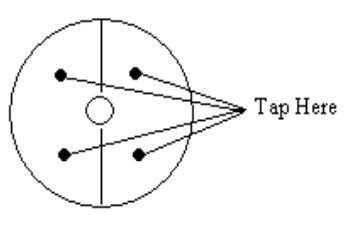

Machines and equipment shall be operated by authorized personnel only.
Never Use a Machine If You Are NOT Trained – Always Get Training Before Operating Any Machinery.
You must attend general safety training and specific training on the machine you intend to use. If you are unfamiliar with a particular tool or instrument, do not use it until you are properly trained on its usage.
Never Work Alone – Always Use “Buddy System.”
At least two adults must be in the shop when power tools are being used. Use of shop is not allowed without Shop Supervisor permission.
Never Use Machine When Impaired - Be Sober and Smart.
This includes when you are sick, too tired, stressed or hurried to work carefully or on medication that could make you drowsy.
Never Start Work If You Cannot Do The Job Safely- Just Don’t Do It.
There are limits to what we can build here, and how safely you can do it in hurry.
Never Wear Open Toe Shoes -Use Closed-Toe Shoes in the Shop.
Tools, chips and fixtures are sharp, and often hot. Shoes will help protect your feet from injury. Leather steal toe shoes are preferred.
Never Work Without Proper Eye Protection -Always Wear Appropriate Safety Glasses or Goggles When Working or Cleaning Tools.
Prescription glasses with plastic lenses must meet ANSI Standard Z87.1 for safety.
Never Work With Loose Hair, Jewelry, etc. –Always Remove or Secure Anything That Might Get Caught in Moving Machinery.
Long hair, necklaces, ties, dangling ID badge, jewelry, loose clothes, watch or Rings, may get caught in tools can drag you along resulting in serious injury or death.
Never Bring Hands Close to Sharp Objects – Always Keep Your Hands At a Safe Distance From Sharp Tools.
Operators shall keep hands off work while machine is in operation.
Never Create a Dusty and Smoky Environment - Dust, Chemicals and Smoke Can Be Dangerous to Your Health, so Work in Well-Ventilated Areas, Minimize Contamination and Use Appropriate Protective Equipment (PPE).
Ensure the shop is well ventilated and appropriate PPE is used when working with machines.
Never Be Shy To Seek Help –Always Ask
If you’re Unsure about the safe operation of a tool or any aspect of a job – have shop staff check the tool or work with which you are unfamiliar.
Exercise common sense and clarify before starting work
Cutters and tools shall be in the clear before machines are started.
Clean-up chips, spills, etc., on and around machinery after each use.
Never Leave Your Work Area in Mess – Always Clean Up After Yourself.
Before you leave your work site all tools must be returned to the toolbox, the machine cleaned and wiped down and the floor swept. Leave 10-15 minutes for cleanup at the end of your shift.
Never Remove Safety Guards – They are present for reason.
You must ensure that safety guards are in place on moving parts before you start working.
Safeguards removed for repairs must be replaced promptly or temporary guards installed.
Never Use Gloves While Using Rotating Equipment – Remove Them Before Starting Work.
Gloves can get entangled in rotating machine parts resulting in serious injuries.
Never leave broken or damaged tools or abnormal equipment unreported – Always inform the Shop Supervisor to remove the damaged equipment for service and repair.
Broken parts or equipment can result in serious injuries and delays. Make sure you tag the broken or damaged equipment, fill out the “Broken/Damaged Equipment” form, and inform your supervisor or shop manager to get it repaired before next use.
Never make any Adjustments to a Machine When it is in Operation. Before Making Adjustments Always Talk to the Shop Supervisor For Permission.
Make sure you are competent and have permission from the shop supervisor. Ensure power is off, equipment is properly locked out and safety devices are in place.
No machine shall be left unattended while it is in motion.
Cleaning, oiling or adjusting any machine shall not be done while the machine is in motion.
Materials to be machined shall be securely fastened or clamped to the working surfaces before starting the machine.
Keys or other adjusting tools must never be left so that they may creep, be thrown, or fall when machine is started.
Use a brush, special tool or hook to remove chips, shavings or other material from work. Flowing shavings shall not be handled with bare hands; metal hooks shall be used.
Revolving shafting, although apparently smooth, will catch loose or ragged clothing, hair or wiping rags. Proper clothes and caution are always necessary when working around any revolving machinery.
When tightening work in chuck jaws with chuck wrench, operator shall see that wrench fits properly; operator should take proper stance when tightening jaws to prevent falling if wrench slips.
When placing or removing heavy castings or billets from machines, operator shall get help or crane service to prevent injury.
Operators shall stand so that they can easily reach the machine controls.
Lathes
All materials shall be properly secured in chucks and collets before machines are started.
Do not leave chuck wrench in chuck after removing work from chuck.
Keep hands off chuck rims when lathe is in motion.
Do not attempt to screw chuck on lathe spindle with power on, as it may get cross-threaded and cause an accident.
Safety-type lathe dogs shall be used when turning work on centers.
See that tail stock, tool holder and work are properly clamped before turning on power.
It is dangerous to shift step pulley belts with the hands while the belts are in motion with power on; use a belt pole or other suitable stick.
Do not attempt to adjust a tool while the lathe is running.
Operators shall not attempt to use micrometers on revolving work.
Drill Press
Never attempt to hold the work under the drill by hand; clamp it securely to the table before starting the machine.
When tightening drill in chuck of drill press, remove release key before you start machine, or your arm may be twisted around spindle. Never leave key in chuck.
Use drills properly sharpened to cut to the right size.
Run the drill only at the correct speed; forcing or feeding too fast may cause broken drills and result in serious injury.
If the work should slip from clamp, never attempt to stop it with your hands. Stop the machine to make any adjustment or repair.
Drills, reamers, etc., must never be forced by exerting excess pressure on the feed lever. Tools may break and cause injury.
Milling Machines
All work shall be secured properly and all loose objects removed from tables before machines are operated.
Cutters shall be checked for cracks or breaks before mounting and shall be securely mounted before operations are started.
Operators shall keep head and hands away from cutters when machine is in operation.
File tangs or other makeshift drifts shall not be used to remove taper shank tools. Proper drifts are available in tool rooms.
Safety guards shall be placed around any work item extending beyond machine table.
Milling cutters and other hardened tools shall not be struck with steel hammer. Blocks of wood, rawhide, or copper hammers should be used.
Proper feeds and speeds shall be selected before operations are started.
Machines shall be stopped before any attempts are made to measure or to check work.
Guards and baffles shall be used to protect others from flying chips, oil or coolants.
Operators shall be sure that cutters and feeds are turning in the proper direction so the cutters will not climb up or jam. Such an accident can cause injury to the work, the machine, and to the operator as well.
Operation and Grinders
Caution: All grinding wheels operate at dangerous speeds.
See that the grinding wheel fits easily on the spindle. It is dangerous to force it on, nor should it be too loose.
Washers or flange facings or compressible material shall be fitted between the wheel and its flanges. If blotting paper is used, it should not be thicker than .025 inch.
After a wheel is mounted, allow it to develop full operating speed; meanwhile, stand to one side and out of danger. Never apply the work until this speed test has been made and the wheel has been properly dressed. Under no condition should the wheel revolve faster than the safe R.P.M. recommended by the manufacturer as shown on the label.
Do not force work against a cold wheel, but apply it gradually, giving the wheel an opportunity to warm, thus reducing the chance of breakage. This applies to starting work in the mornings in cold rooms and to new wheels which have been stored in a cold place.
Wheel dressers, except the diamond type, shall be equipped with guards over the tops of the cutters to protect against flying pieces, broken cutters, or wheel particles.
Operator shall see that wheel turns freely and is properly mounted before operating.
All wheels should be given the "ring" test before they are mounted on machines.
Tap the wheel gently with a light nonmetallic implement, such as the handle of a screwdriver for light wheels, or a wooden mallet for heavier wheels.
If the wheel sounds cracked (dead), the wheel must be replaced. A sound and undamaged wheel will give off a clear metallic tone.
Wheels must be dry and free from sawdust when performing the ring test; otherwise, the sound will be deadened.

The wheels should be tapped at 45° on each side of the vertical centerline of the wheel.
Then, the wheel should be rotated 45° and the test repeated again.
Gloves should not be worn while operating grinders.
Dust collectors or other exhaust systems shall be in operation during grinding operations on machines so equipped.
Tools or other loose objects shall be kept off machines in operation.
Wheel guards shall be kept in place and in good condition while machine is in operation.
Safe operating speeds are marked on wheels by manufacturers.
Operators shall not run wheels faster than recommended speeds.
Operators shall avoid standing directly in front of grinding wheels, especially when starting.
Wheels loaded or clogged with metal shall not be used until dressed.
Grinding wheels out of round or out of balance shall be trued before using.
Eye protective equipment with side shields shall be worn while grinders are being operated.
Grindings wheels shall be equipped with tool rests, same must not be worn more than one-eighth inch from stone and work held firmly thereon.
It is unsafe to adjust a work-rest while the grinding wheel is in motion. The rest may slip and break the wheel.
The side of an emery wheel shall not be used for grinding unless it is a special-type wheel for that purpose.
Be especially careful when grinding narrow tools. They are apt to catch between the rest and the wheel.
Welding
All welding operations shall follow the Job Safety Rules for welding.
Personal Protective Equipment
Safety spectacles, either prescription or plain type, or a face shield, shall be worn on the job.
Work shoes (safety shoes recommended) should be worn by all machinists since handling material is an essential part of this occupation.
Gloves are recommended for protection in handling material but must not be worn when operating machines.